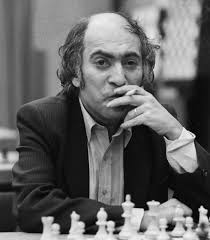

Пантеон Шахових Геніїв
"Є два види жертв: коректні і мої"
©Михайло Таль

Михайло Таль
Період радянської гегемонії(1948–1972)
Після 1948 року радянська шахова школа стала беззаперечним лідером, перетворивши шахи на національний пріоритет.
- Василь Смислов (1921–2010) Чемпіон Світу (1957–1958). Його стиль був гармонійним, глибоко позиційним, з особливою майстерністю гри в ендшпілі. Його гра часто порівнювалася з музичною симфонією.
- Михайло Таль (1936–1992) Чемпіон Світу (1960–1961). "Чарівник з Риги" шокував світ своєю інтуїтивною, жертовною грою. Він створював хаос на дошці, змушуючи суперників помилятися в умовах цейтноту та психологічного тиску.
- Тигран Петросян (1929–1984) Чемпіон Світу (1963–1969). Майстер профілактики та захисту. Петросян був відомий своєю здатністю передбачати та запобігати планам суперника, створюючи "непробивні" позиції.
- Борис Спаський (1937-2025) Чемпіон Світу (1969–1972). Універсал, який міг успішно грати як позиційно, так і атакувально. Його поразка від Боббі Фішера в 1972 році ознаменувала короткочасне закінчення радянської гегемонії.